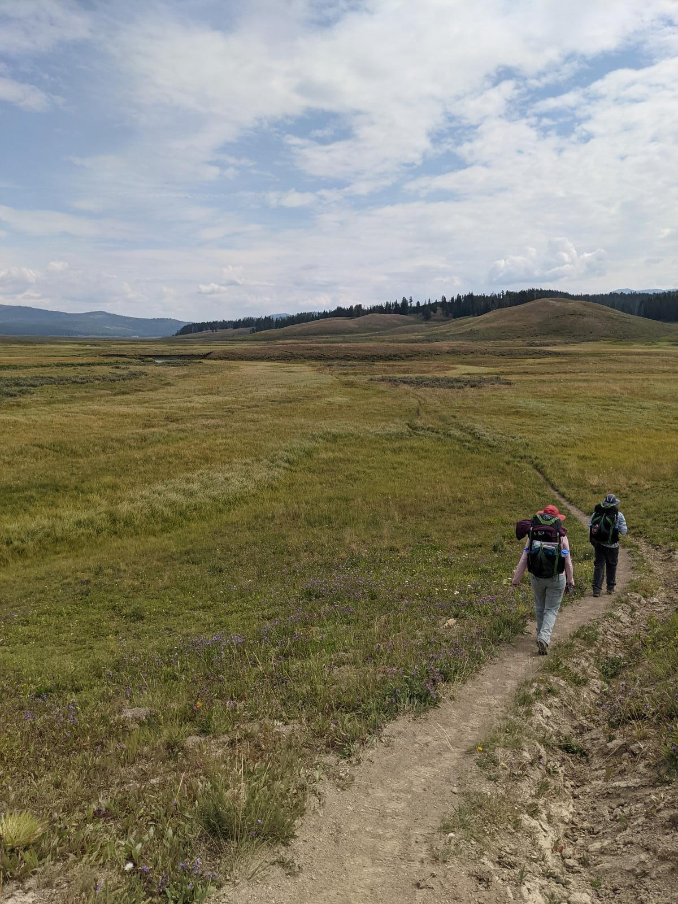
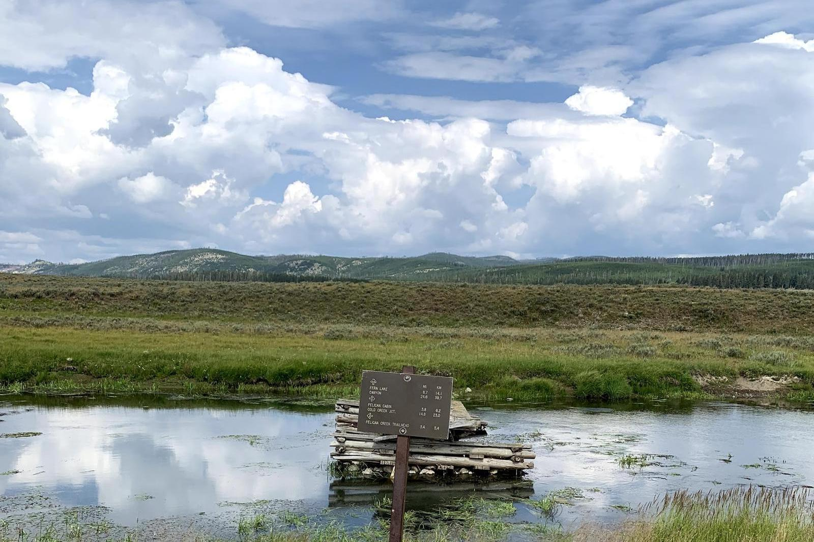

A Day in Yellowstone National Park: The Pelican Valley Trail
Yellowstone National Park is a place of wonder and awe, and I was fortunate to visit in July 2021. One of the highlights of my trip was the Pelican Valley Trail, a 7-mile out-and-back hike that traverses a beautiful meadow and valley.
Pelican valley has the highest concentration of grizzly bears in the lower 48 states. That part felt scary and adventurous but I felt safe hiking with a group and making noise. The rangers said the bears try to avoid humans when they become aware of human activity. I was also well prepared with bear spray.
The hike started in a short path through the woods after which the trees open up to reveal a sprawling meadow. It was bright and sunny when we went in. There was grassland all around us with the terrain undulating up and down as we pushed further towards what seemed like a stream from a distance. We could see a couple of bison at a very far distance motionless. We passed a couple of rangers who asked if we were going backpacking and staying overnight. We continued walking after a brief chat. The turn-around point for the trail comes near a washed out bridge. This bridge is actually over the river that snakes through the valley. Just around few hundred feet in front of the bridge, the trail gets quite grassy and the grass gets almost knee high. We made our way back once we caught a break.
The hike was beautiful and memorable, and if you are able to take the precautions for bears, I would highly recommend it to anyone visiting Yellowstone National Park.

